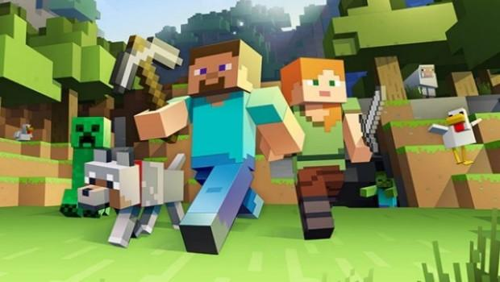
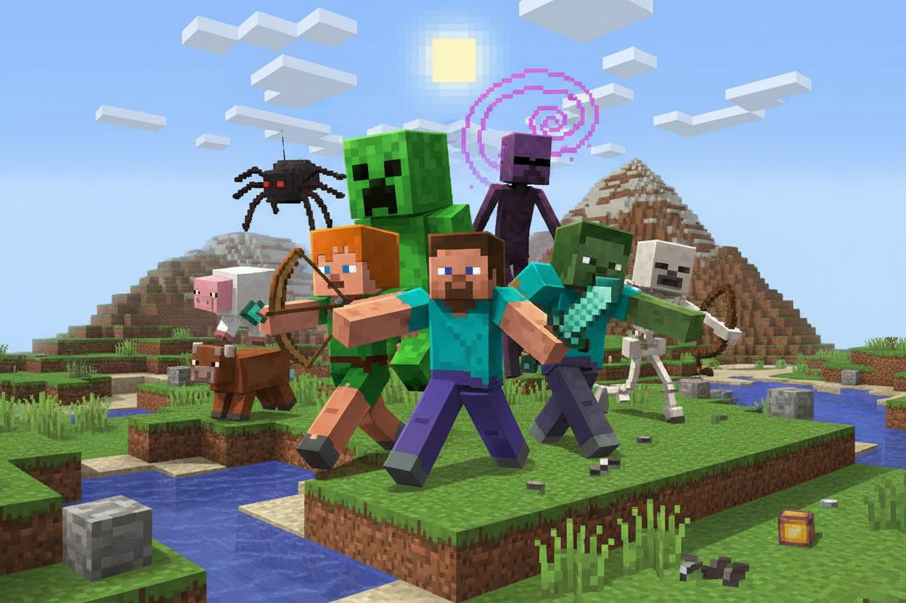
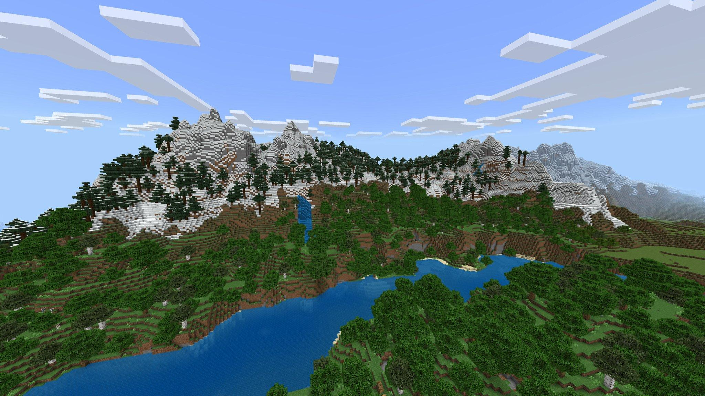
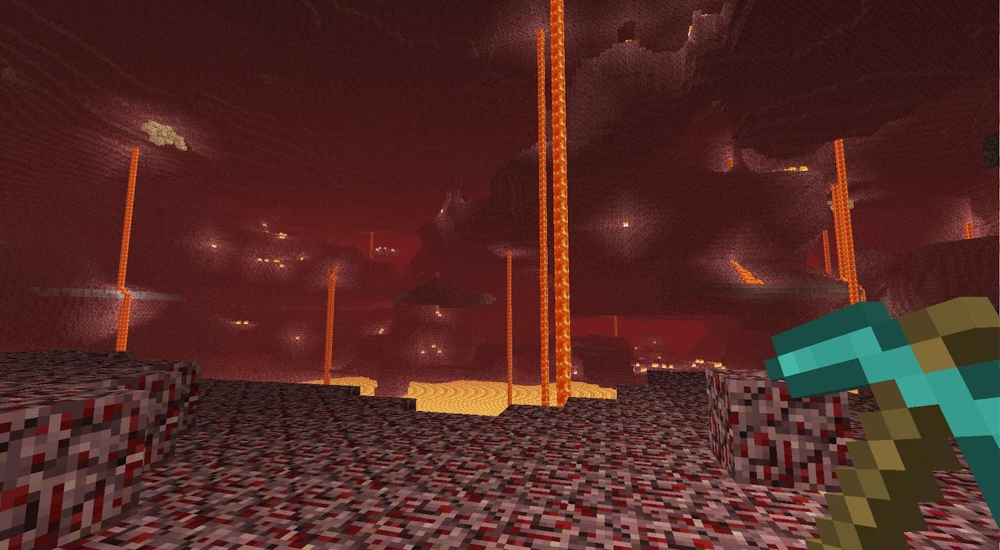
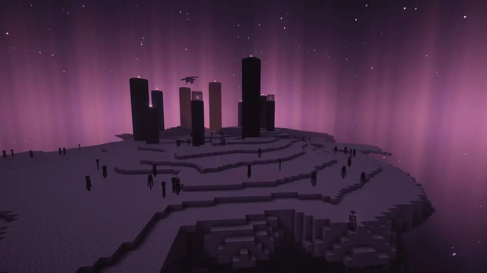

JAVA EDITION
A edição Java
Conhecida por sua comunidade de modificações, servidores personalizados e ampla liberdade para personalizar a experiência no computador.
Explore um universo feito de blocos, onde sua criatividade é o limite. Construa estruturas, descubra novos lugares e enfrente desafios em um mundo cheio de possibilidades.
Conhecer o jogo →
Conheça os principais dados de Minecraft.
Minecraft é um jogo eletrônico de mundo aberto que permite aos jogadores explorar ambientes formados por blocos, coletar recursos e construir praticamente qualquer coisa. O jogador pode escolher como deseja aproveitar a experiência, seja construindo grandes estruturas, explorando cavernas ou enfrentando criaturas.
Descubra as principais diferenças entre as edições Java e Bedrock.
Conhecida por sua comunidade de modificações, servidores personalizados e ampla liberdade para personalizar a experiência no computador.

Disponível em diversas plataformas, permite que jogadores de diferentes dispositivos compartilhem experiências no mesmo mundo.
Conheça a origem e a evolução de um dos jogos mais populares do mundo.
Minecraft foi criado por Markus Persson, conhecido como Notch, e teve sua primeira versão pública lançada em 2009. O jogo chamou atenção pela liberdade oferecida aos jogadores, permitindo explorar ambientes, coletar recursos e construir estruturas.
Em 2011, o jogo recebeu seu lançamento oficial. Posteriormente, passou a ser desenvolvido pela Mojang Studios, que ampliou constantemente suas possibilidades com atualizações, novos recursos e conteúdos.
Ao longo dos anos, Minecraft chegou a diferentes plataformas e conquistou uma comunidade mundial, tornando-se referência entre os jogos de exploração, construção e sobrevivência.
Conheça alguns dos personagens e seres encontrados durante as aventuras em Minecraft.

Steve e Alex são personagens clássicos de Minecraft. Representam os jogadores em suas aventuras pelo mundo, explorando ambientes, coletando recursos e construindo diferentes estruturas.

O mundo é habitado por diferentes criaturas, conhecidas como mobs. Entre as mais conhecidas estão o Creeper, o Zumbi, o Esqueleto e o Enderman, cada uma com características e comportamentos próprios.
Explore as três dimensões de Minecraft e descubra ambientes, criaturas e desafios diferentes.

É a dimensão principal de Minecraft. Possui diversos biomas, como florestas, montanhas, desertos, oceanos e planícies, oferecendo inúmeras possibilidades de exploração.

Uma dimensão perigosa, caracterizada por ambientes vulcânicos, grandes cavernas e criaturas próprias. Também possui recursos importantes para a progressão do jogador.

Uma dimensão misteriosa formada por ilhas flutuantes. É conhecida por abrigar o Ender Dragon, um dos principais desafios da jornada em Minecraft.
Descubra detalhes interessantes sobre a criação, as mecânicas e o universo de Minecraft.
O Creeper surgiu de um erro durante o desenvolvimento de um modelo de porco. A aparência inesperada acabou inspirando uma das criaturas mais reconhecidas do jogo.
A redstone permite criar mecanismos, sistemas automáticos e circuitos dentro do jogo, possibilitando construções que funcionam de maneira lógica.
Minecraft possui modos como Sobrevivência, Criativo, Aventura e Espectador. Cada um oferece diferentes formas de explorar e aproveitar o mundo.
Os ambientes são gerados proceduralmente, criando terrenos, biomas, estruturas e paisagens diferentes durante a exploração.
A trilha sonora original, composta por C418, ajudou a construir a identidade de Minecraft, com músicas ambientes que acompanham a exploração.
Minecraft ultrapassou os limites do entretenimento, sendo utilizado também em atividades educacionais, projetos criativos e experiências colaborativas.
Sua liberdade de criação e exploração continua inspirando jogadores de diferentes idades e comunidades ao redor do mundo.
Consulte as fontes utilizadas na construção deste conteúdo.
Informações sobre o jogo, atualizações, funcionalidades e universo de Minecraft.
Acessar site oficialMaterial complementar sobre dimensões, criaturas, mecânicas e características do jogo.
Consultar enciclopédiaInformações sobre possibilidades educacionais, criatividade e aprendizagem utilizando Minecraft.
Acessar Minecraft EducationImagens utilizadas nas seções de personagens, criaturas e dimensões. Consulte as fontes originais de cada arquivo.